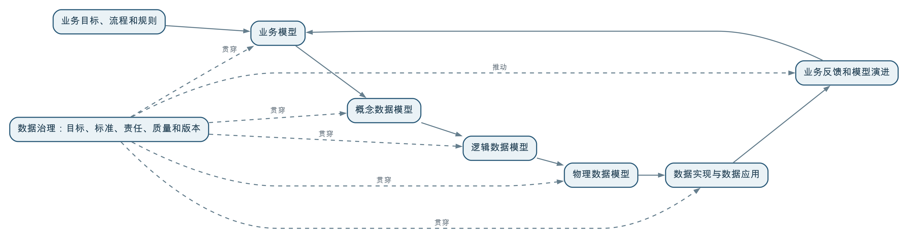

业务建模描述一个行业或组织如何运转，数据建模将业务对象和规则转换为可管理的数据结构，行业数据模型则沉淀行业共性的数据表达；数据治理负责把这些模型与本组织的业务目标、数据来源、责任、质量和应用场景连接起来，并持续维护和演进。
业务建模、数据建模和数据治理是相互关联但不等同的专业工作。业务建模是上游，数据模型通常由业务模型推导而来；行业数据模型提供参考，不能替代本组织的实际设计；数据治理则保证模型能够落地、运行、复用并持续产生业务价值。
数据不是凭空产生的。它记录的是业务对象、业务事件、状态变化、业务规则和业务结果。如果不了解业务如何运转，只从现有数据库字段出发设计模型，往往只能得到系统表的拼接，无法解释数据之间的真正关系。
例如，土地全生命周期涉及调查、确权、规划、供地、审批、建设、登记和利用评价等环节。每个环节产生不同的业务事件，也会改变地块、权属、用途和项目的状态。要设计能够支撑全过程分析的数据模型，必须先理解这些业务关系。
本书所说的业务建模，不是商业模式设计，而是对行业或组织业务进行结构化描述。它通常关注：
以自然资源行业为例，业务模型可能描述：谁负责土地调查和登记，规划、供地、审批、建设和监管如何衔接，一块土地在不同阶段发生哪些状态变化，以及哪些业务规则决定后续利用。
业务建模本身是一个复杂且独立的专业领域，涉及业务架构、流程建模、能力建模、领域建模和规则建模等方法。它决定组织如何理解和设计业务，但不等同于数据库设计。
本书以数据治理为重点，不展开介绍完整的业务建模方法，主要讨论业务模型如何影响数据模型，以及数据治理如何保证模型能够落地和持续演进。
数据模型是业务模型在数据层面的表达，主要回答：
可以用下面的关系理解模型推导过程：

识别核心对象和关系，例如地块、权属、规划、项目、审批和利用评价，以及它们之间的基本联系。
进一步明确对象的属性、标识、关系、状态和业务事件，但不急于决定某一种数据库产品或物理存储方式。
结合实际系统、数据量、查询方式、安全和性能要求，确定表、字段、索引、分区、空间字段和存储结构。
这种推导不是机械的一对一转换。一个业务对象可能拆成多个数据实体，多个业务对象也可能在特定场景中合并；一个业务事件还可能需要保存发生时间、来源、前后状态和处理结果。
行业业务模型描述一个行业中相对稳定、普遍存在的业务结构，关注“这个行业如何运转”。自然资源行业通常都有地块、权属、规划用途、供地、审批、建设、利用和监管等业务环节，但不同地区的职责和流程可能不同。
行业业务模型可能表现为业务能力模型、流程模型、业务对象模型、规则模型或行业参考架构。业界对具体名称和表达形式不一定完全统一，但“用参考模型沉淀行业共性认识”是普遍做法。
行业数据模型是基于行业共性业务认识形成的数据层参考模型，通常包括：
它回答的是：
如果要描述这个行业的业务，通常需要哪些数据对象，以及这些对象应如何关联？
例如，土地行业数据模型可以表达“地块—权属—规划—供地—项目—审批—建设—利用评价”的数据关系，但它不等于某个省、市或企业最终使用的物理数据库。
两者都描述行业共性，但层次不同：
| 类型 | 主要关注 | 典型问题 |
|---|---|---|
| 行业业务模型 | 业务如何组织和运行 | 谁负责、流程如何走、规则如何生效？ |
| 行业数据模型 | 如何用数据表达业务 | 有哪些对象、属性、关系、事件和指标？ |
| 组织业务模型 | 本组织具体如何管理业务 | 本组织的职责、流程和口径有什么特殊性？ |
| 组织数据模型 | 本组织实际如何落地数据 | 数据来自哪里、如何存储、如何关联和服务？ |
业务模型是数据模型的重要来源，但不是唯一约束。数据模型还要考虑历史追踪、质量要求、共享安全、查询计算、系统边界和技术实现。
行业模型描述的是共性和参考，组织实际运行还会受到业务流程、管理制度、系统历史和数据条件影响。直接照搬常见的问题包括：
因此，行业模型更适合作为参考蓝图和映射框架。组织需要根据业务目标裁剪范围、补充特有对象、确定数据来源，并记录与行业参考模型之间的差异。
模型真正产生价值，需要经过一系列治理工作：
土地全生命周期的业务模型需要描述调查、确权、规划、供地、审批、建设、登记和利用评价之间的业务衔接，明确地块、权属主体、项目和管理部门在各环节中的角色和状态变化。
在此基础上，可以形成概念和逻辑数据模型，表达地块、权属、规划用途、供地合同、审批事项、建设项目、利用状态和评价结果等数据对象，以及对象之间的关联和历史事件。
治理团队还需要把模型映射到现有业务数据库、空间图层和历史文件，统一地块标识，明确权属和利用类型的权威来源。同时，还要定义空间关系和状态变化的质量规则，并将变更传递到低效用地识别、项目监管和规划分析。
某省可能重点关注低效用地识别，某市可能还需要详细管理规划条件和审批协同。同一个行业参考模型，经过组织裁剪和治理落地后，才会成为真正可用的组织数据模型。
业务模型描述业务如何运转，数据模型描述如何用数据表达业务。两者有关联，但关注层次不同。
行业数据模型只能提供数据层参考，不能替代组织对业务流程、角色、规则和管理目标的理解。
脱离业务目标和数据条件的完整复制，会增加建设成本，造成模型与实际业务脱节。
政策、组织、业务流程和监管要求都会变化。业务模型、数据模型和治理规则都需要版本管理和持续修订。
业务对象、关系、指标和规则需要业务人员共同确认。技术团队负责把共识实现为可运行的数据结构和链路。
业务建模回答“业务如何运转”，数据建模回答“需要怎样组织数据来表达业务”，行业数据模型则提供行业共性的数据参考。数据治理负责让这些模型与本组织的业务目标、数据来源、责任、质量和应用场景连接起来。
本书不展开完整的业务建模方法，而是关注业务模型如何影响数据模型，以及治理如何让模型被正确实现、持续维护、跨场景复用并产生业务价值。
← 上一问：012 大数据平台、数据中台和数据治理平台有什么区别？ · 返回目录 · 下一问：014 数据治理与 BI（商业智能）、数据大屏是什么关系？ →